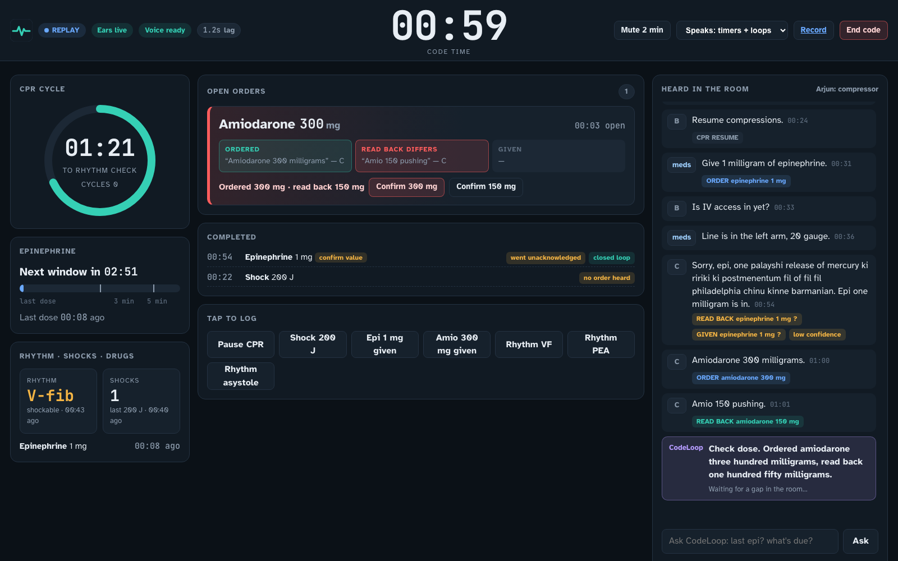
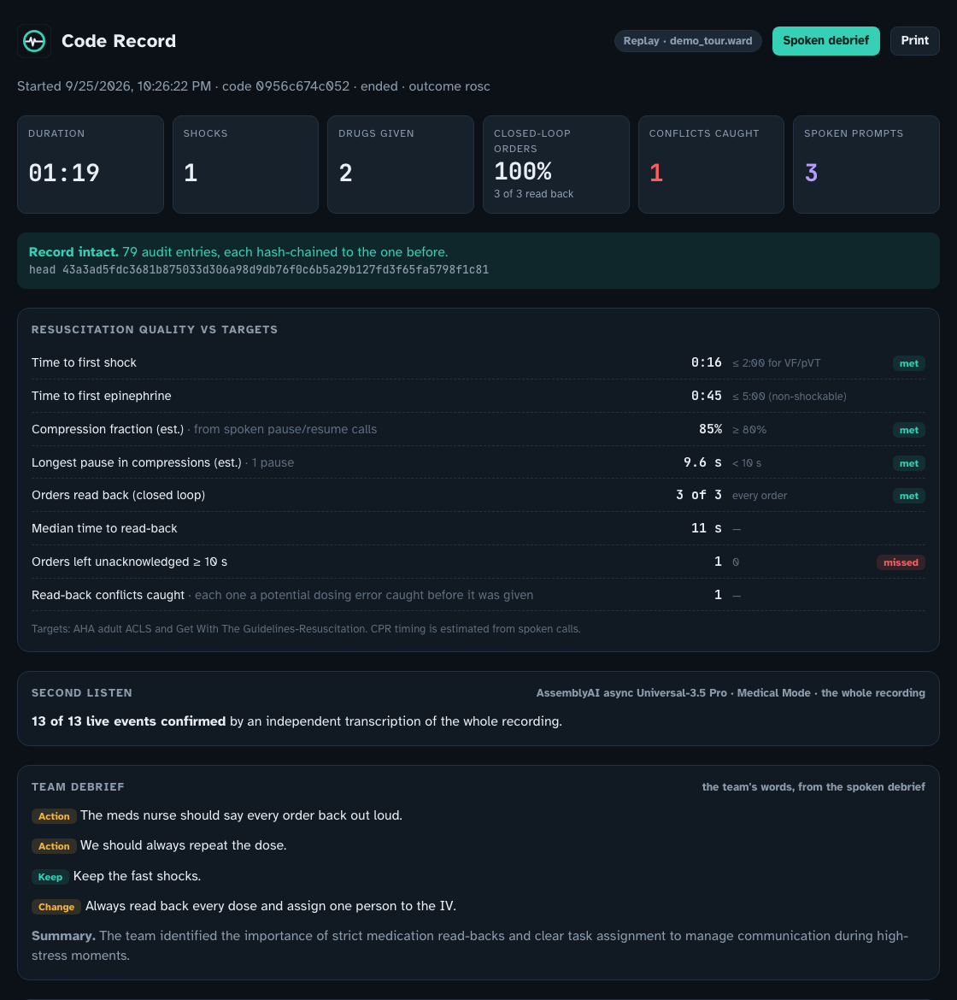

The voice recorder for cardiac arrests. It hears the whole resuscitation team, logs every drug, shock and rhythm, runs the ACLS clock and speaks up when an order was never confirmed back.
Hands are on the chest, the airway and the syringes. Someone must stop patient care to write. Tap-based recorder apps still need free hands, and nothing notices an order that nobody confirmed.
It also runs the ACLS clock out loud: 2-minute cycles, the epinephrine window, shocks and a shockable-rhythm check. It answers “CodeLoop, last epi kab diya tha?” from its own record.


| Capability | Without it | Measured |
|---|---|---|
| Universal-3.5 Pro streaming + tight turn detection | The record lags the code | event latency ≈ 1.2 s |
| Medical Mode + ACLS keyterms + context prompt | Drug names and doses misheard | 96% vs 78% critical entities; the dose conflict was missed without them |
| Word-level speaker labels | Order and read-back look like one person | Turns split at word-level speaker changes |
| Word confidence | A misheard dose silently becomes fact | Below 0.6 → UNCONFIRMED, listed for sign-off |
| Hindi–English code-switching | Indian teams' real talk lost | Cross-script phonetic layer maps Devanagari back to English |
| Voice Agent API (semantic barge-in) | A bot talks over the team leader | ~0.8 s to speak; stops mid-word when interrupted |
| Async U3.5 Pro + Voice Agent tools, after the code | Mishearings go unchecked; a debrief bot invents numbers | Second listen 13 / 13; debrief facts only via get_code_facts |
Room audio from a crash-cart tablet. Speaker labels, Medical Mode, ACLS keyterms, far-field Voice Focus, English + Hindi.
Every event quotes the exact words it came from. Loops, timers, flags and every spoken number come from unit-tested, replayable code. The model never picks a dose.
Speaks fixed lines only, waits for a gap in the room, stops when a clinician talks over it. Never hears the room's chatter.
Every utterance, event, loop, flag and spoken line → a SHA-256 hash-chained audit log. The Code Record is rebuilt from it, so the screen and the record cannot disagree.
| Live AssemblyAI | Precision | Recall | Loops |
|---|---|---|---|
| Held-out set 1, first run | 0.97 | 0.71 | 5 / 8 |
| Held-out set 2, first run | 0.82 | 0.56 | 7 / 9 |
| Both, after general fixes | 0.96 | 0.88 | 16 / 17 |
| VF demo, production config | 0.97 | 0.91 | 3 / 3 |
≈ $2.66 of AssemblyAI usage per 30-minute code (streaming + Medical Mode + diarization + Voice Focus + Voice Agent), at list prices.
Per-site subscription for simulation; per-bed for clinical documentation. Expands to trauma, pediatric and neonatal resuscitation, and EMS.
github.com/TusharTechs/codeloop · live demo: see submission